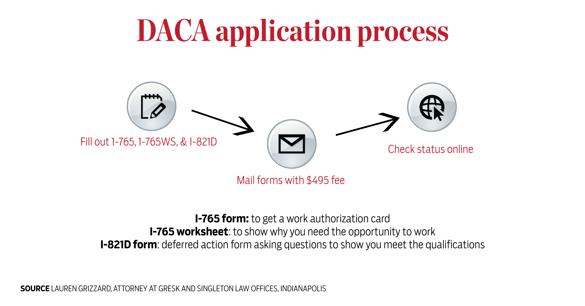

That Tuesday started like any other.
Maria Chavez Juarez sat in her criminology class, Sandy Rivera in her astronomy lecture and Kemberly Hernandez in the IUPUI Campus Center building. But soon Maria’s phone, tucked between her legs, buzzed with message after message.
She peeked at the Snapchat messages, and she wasn’t listening to her professor anymore. The President of the United States had sent out a tweet into the world:
“Congress, get ready to do your job - DACA!”
And then the news came through that September day. The U.S. government would do exactly what all three of them, as well as hundreds of thousands of students like them around the country, had feared.
The Deferred Action for Childhood Arrivals program was ending.
The newscasts finished. Classes ended. Maria, Sandy and Kemberly walked straight to the Latino Student Association office. The straps of Maria’s backpack felt ten times heavier than they had that morning. Kemberly saw the slogans on a public whiteboard on campus — “build a wall,” “send them back” — that someone wrote in August and never erased. Sandy knew she wouldn’t go to the rest of her classes that day.
The three of them found each other in the LSA office. DACA, the reason they had plans for their futures, the reason they could take astronomy and criminology classes and hang out in the Campus Center at all, the reason they met each other at IUPUI, was over.
They looked at each other and didn’t say a word. Maria, Sandy and Kemberly weren’t surprised by the announcement. But whether the news was expected didn’t matter then. They stood silently together, hugging each other tightly, and cried.
Several of the DACA students we interviewed spoke at rallies in Indiana and traveled to Washington, D.C., to advocate for the DACA program.
The status of DACA recipients — often called “Dreamers” — was never certain in its short history. The program began accepting applications in 2012 from undocumented young people brought to the U.S. by their families. It provided protection from deportation orders, a work authorization card and information for Social Security applications, which gave them the opportunity to work and study in the U.S. It made no sense, then-President Barack Obama said, to deport hardworking young people to countries they might not remember.
The act met immediate backlash, especially from conservative leaders. Sen. Charles E. Grassley, R-Iowa, called it “an affront to the process of representative government.” Those who agreed have been trying to eradicate the law from the moment it was signed.
In 2012, 10 Immigration and Customs Enforcement agents filed a suit in the northern Texas federal district court opposing DACA. The lawsuit was dismissed.
In 2013, most Republicans and three Democrats in the House of Representatives voted to defund DACA. That decision was never signed into law.
In 2014, Obama attempted to expand DACA to allow more people to become eligible. Twenty-six states sued in federal court, and the expansion was halted.
So when the end of DACA was announced by President Trump’s administration that Tuesday in September, it didn’t come as much of a surprise.
The lives and futures of DACA kids have always stood on shifting sand. Now even that unstable ground is gone.
Burnt orange and bright yellow buildings. Colorful mosaics on the walls. A garden overflowing with plants. The beautiful church down the road. She was only 6 when she left, but Maria Chavez Juarez can still remember San Miguel de Allende.
She can remember when she left, too, when her mother told her to put on her best clothes, because they were going to a party. She wore socks with lace hems. Maria, her mother and two of her siblings were driven to the U.S.-Mexico border. They jumped a fence and crossed the Rio Grande at night. Maria’s socks were covered in burrs. Someone carried her. A snake tried to jump up at them. The sound of cicadas seemed deafening. Her mother told her to pray.
Maria’s father had been working in Indianapolis for years, moving between the U.S. and Mexico. When they came to meet him in the U.S., they wouldn’t go back.
For years, Maria wished they would.
Another brother and sister were still in Mexico because they had jobs and families of their own. Maria hasn’t seen her oldest sister in 13 years. And life in San Miguel, from what she remembered, was warm and colorful and slower-paced than in the U.S.
Her parents couldn’t help her with homework because their English wasn’t strong enough, and she was too shy to ask her teachers. She was far ahead of her classmates in math skills, but nobody seemed to notice. She didn’t want to apply for DACA. Maria wanted to go home.
When she started college, Maria majored in tourism management. There was a lot of tourism business in Mexico, she thought as she signed up for classes. Maybe this could take her home.
“I eventually realized, though, that Mexico probably isn’t like how I remember it,” Maria said. “A family friend visited a few years ago. He said things are very different now, and so maybe it’s better to stay here.”
Maria began to imagine a future here. She changed her major to criminal justice. She started researching master’s degree programs. She spent too much money going out to eat with her friends. She snuck out on weekends without telling her parents. She stayed up studying in the dark, quiet living room at 4 a.m., interrupted by her mother, who always woke in the middle of the night to come talk.
She helped run the Latino Student Association. She thought someday, if she was successful enough, she could start a scholarship to help other Latino students.
But just as Maria decided she wanted to stay, the chance to follow through on that decision was taken out of her hands.
She tried to get angry and speak out like her friends. She prepared a speech for a DACA rally at Ball State University and stood shaking in front of about a hundred people, three bullet points on a blue Post-it note in her hand.
But she didn't have enough optimism to convince anyone that things would change.
Maybe it’s a good thing, Maria said, that a candidate who spent most of his campaign talking about how awful immigrants are ended up winning. Maybe it’s good to know how people really feel.
The walls of the apartment where she lives with her parents in Indianapolis are painted bright yellow. The balcony overflows with plants. It might be as close to their memory of home as Maria and her family can get.
Guillermo Chavez Chavez moved to the United States from Mexico several years before his wife and several of his children joined him. Here he talks about how hard the situation is for his family.
Political talk on immigration policy, especially on immigrants from Mexico, has been heated for years and only intensified since the 2016 presidential campaign.
With rhetoric flying across the political aisle as immigration became a major presidential campaign talking point, many DACA students said the voices missing from the conversation are the ones that matter most: immigrants themselves. They’ve got the biggest stake in the issue.
But if they speak up, they’ve also got the most to lose.
If DACA students disclose their immigration status, they risk their reputation among friends, classmates and teachers. Many fear exposing their parents as undocumented immigrants. Before DACA and in its early days, a school or employer was far less likely to take on such a student. Their status was so fragile, they could barely convince themselves — let alone their schools or workplaces — that they would get to stay.
Many students said their worst fear was that DACA’s protections would just get their hopes up, only to let them down later. That fear has become fact.
Prisma Lopez-Marin, who graduated from IU in 2013, is so tired of the instability that she’s moving back to Toluca, Mexico, a place she hasn’t seen since 1995. Jessie Wang, from Taiwan, didn’t work up the courage to apply for DACA until three years ago – now, an IU freshman at age 28, she knows she might not get to finish her degree. Jesus Bazan, from Michoacán, Mexico, is spending his senior year at IU applying for medical schools, even though he knows it could be pointless. He doesn’t know what else to do.
People studying or working under DACA spent every ounce of energy trying to keep it – proving over and over they were still in the right age range, they hadn’t gotten into legal trouble, they were still in good standing with their schools, they could pay the renewal fees, they needed a job and an income. DACA students can’t plan for a future they can’t see — a future that might not be theirs after all. They struggle to move forward. All they can do is prevent any mistakes that might send them back to cities they barely remember.
It had only been 19 days since DACA was repealed when Kemberly Hernandez heard sirens behind her.
Kemberly was driving to IUPUI and running late. She slowed down and pulled over, and her heart sank as the cop car stopped behind her.
Her heart pounded endlessly in her chest. She couldn’t remember what the officer said to her when she rolled down the window. She could barely pry her fingers off her driver’s license to hand it over.
I’m going to get a mark on my license, and when I try to renew my DACA paperwork next month, they won’t let me, she thought as the officer took her license back to his patrol car. I’m going to be deported, and it’s going to be my fault.
Kemberly sat in the driver’s seat for 10 long minutes.
When the officer came back, she could barely look at him. He had a ticket in his hand.
“I’m going to fine you, but I know you’re running late for class,” he said. “So I’m not going to put any points on your license.”
By the time she pulled back onto the road, Kemberly was hopelessly late for that class. But she drove under the speed limit the rest of the way to campus shaking in relief.


Sandy Rivera believes wholeheartedly that she — and every other DACA recipient — will be allowed to stay in the U.S.
“Trump could have said, ‘I’m going to start deporting you tomorrow,’” she said. “But instead he gave Congress six months to act on it. That’s six months to change people’s minds.”
So that’s what Sandy is doing. She goes to rallies in front of the statehouse and at colleges throughout Indiana. She flew to Washington, D.C., this October with a group of 120 DACA students to talk to senators and representatives.
Rep. Larry Bucshon, R-Indiana 8th District, didn’t talk to Sandy or any of the other students in person. He sent a staffer to the scheduled meeting.
Sandy stood in front of the assistant and tried to introduce herself Wednesday morning.
“If we’re being honest, you know this campaign of yours doesn’t have a chance, right?” the assistant said. “A replacement bill for DACA is never going to even make it to the floor.”
Sandy started over. She told the assistant how her dad moved between Indianapolis and Matamoros, Mexico, for years, how much her mom missed him. How they crossed the border when Sandy was 4 and overstayed their visas. How hard she worked in school, and then realized she couldn’t apply to college. How she wanted to be a teacher, how she felt at home at the front of a classroom full of little kids. How she couldn’t be a teacher, couldn’t help kids like her teachers helped her, unless somebody decided DACA needed to stay.
Sandy became an expert in condensing her life into a two-minute elevator pitch. That congressional staffer, she said proudly, cried when Sandy was finished.
She wasn’t always sure this was a good idea. Sandy used to lie about her immigration status — for years, her friends thought she was from Florida. She wasn’t worried about her future. She was just scared of what her friends would think.
Even once college started, DACA wasn’t something Sandy talked about much. Sandy didn’t have any financial aid her first two years of college, so she worked up to 60 hours a week – 40 at a movie theater-restaurant combo, 20 at Qdoba — while enrolled as a full-time student. Sandy says she doesn’t fight with her parents much, but those years, they got upset when she couldn’t find time to go to church with them. Who cared about rallies or activism when she barely had the time to pass her classes or to be a good daughter?
But this year, Sandy got a call after a summer gym class in June, telling her she had won a scholarship. She broke down in tears in front of two girls she barely knew, still wearing her sweaty gym T-shirt.
This year, she helped run the Latino Student Association. She had an internship helping plan events for the Indiana Latino Institute. She taught Spanish classes at a preschool. She binge-watched "Jane the Virgin" with her friends, she tagged along to parties, she read “In the Country We Love,” her favorite book. And this year, too, the president decided to take that all away.
This map shows where many of the DACA students we spoke to were born. Hover over each pinpoint to see their hometowns.
Trump gave Congress six months to act. Whether Maria, Sandy and Kemberly – and more than 600,000 people like them – get to stay is a decision that lies in the hands of the legislative branch now. Three of those months are over. No progress has been made.
Beyond that deadline, it is impossible to know what comes next. Some DACA students will try to stick it out in the U.S. Some will move back to the countries their families used to know. It has always been pointless to plan too far ahead. A college education, a scholarship, an internship, a job – these could be gained or taken away at the whim of U.S. senators or the mistake of speeding in front of a cop. They are like flies in amber: relentlessly scrutinized by those above them and too paralyzed to move forward on their own.
March 5 looms ever closer.
“You can ask me all the questions you want about what I envision in my future, whether it be the best or the worst scenario, and I like to think I’m planning where I’m going,” Sandy said. “But the truth is, I can’t even answer. I can’t plan ahead. I can’t see down any of those roads.”